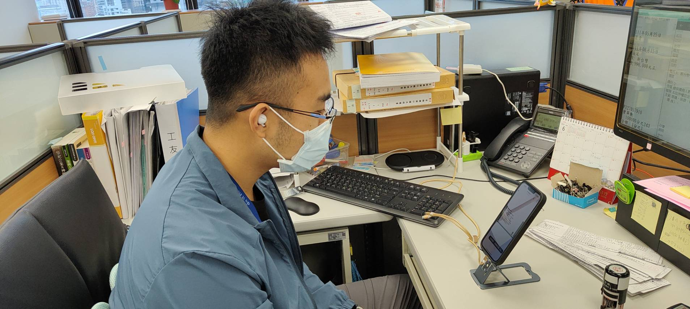
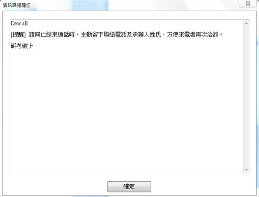

| 主題 | 執行狀況 |
|---|---|
| 教育訓練-電話使用禮儀講座 |  |
| 彈跳視窗-顯示於同仁的個人 |

|
本次考核年度地政局電話禮貌測試本所維持平均分數 100分；另本所自評平均 98分，較上年度提高 6分；異性質跨機關測試平均分數 97分，與上年度相比則增加 2.2分；同性質跨機關測試平均分數 97分，與上年度相比增加 1.4分。整體表現均有顯著提升。
| 測試方式 | 111年度分數 | 110年度分數 | 差異 | 成長率 |
|---|---|---|---|---|
| 跨機關測試（異性質） | 97 | 94.8 | +2.2 | 2% |
| 跨機關測試（同性質） | 97 | 95.6 | +1.4 | 1% |
| 地政局測試 | 100 | 100 | - | 0% |
| 本所自辦測試 | 98 | 92 | +6 | 7% |
本年度電話禮貌測試成績整體上較去年度進步，顯示本所在電話禮貌上持續精進努力。為維持本所電話禮貌高品質，往後將持續宣導電話禮貌注意事項（如透過活力總動員、舉辦教育訓練與新人培訓、於課務會議宣導、指派外訓等），另指派電話禮貌測試缺失較多之同仁辦理電話禮貌講座或指派該同仁參與電話禮貌相關課程，藉由備課或參與之過程瞭解電話禮貌之內涵，並改進電話禮貌之相關缺失。